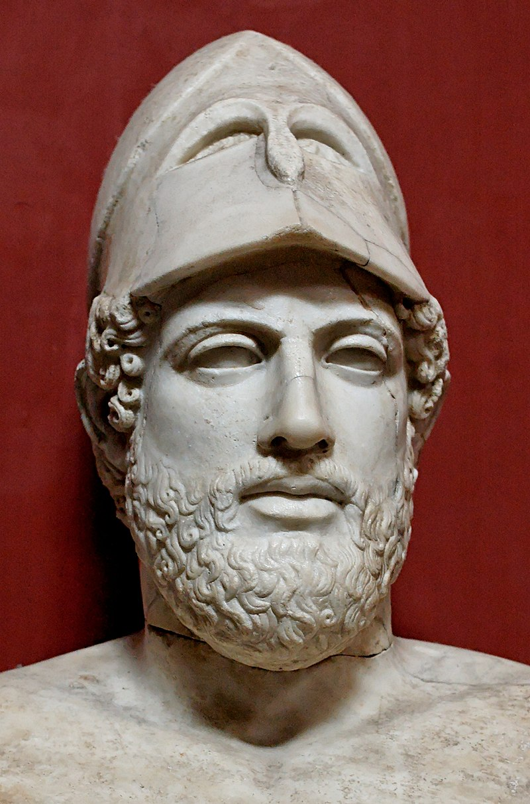
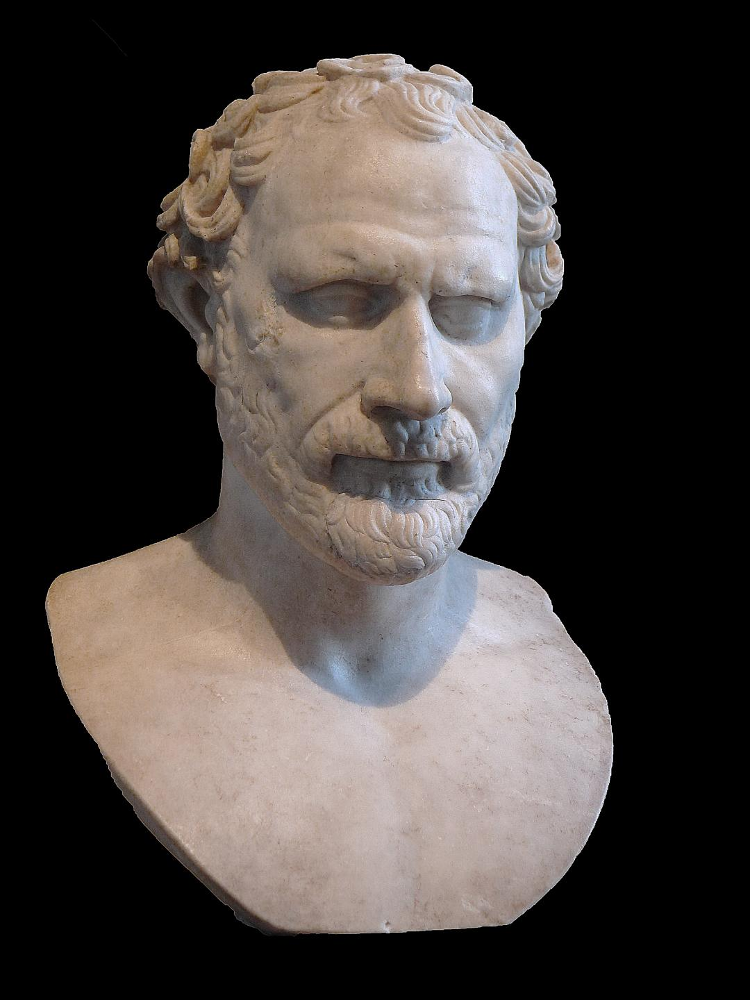

Gli Oratori
Atene è stata tanto patria di drammaturghi e filosofi quanto di oratori, potendo vantare figure di spicco il cui stile è stato imitato anche dal mondo latino.
L'oratoria è veramente la base della letteratura e cultura greca, infatti la si può vedere anche nelle due opere epiche per eccellenza, Iliade ed Odissea.
L'uso sistematico e consapevole dell'arte oratoria e la conseguente definizione di un sistema di precetti, però, si ebbero in Atene nel corso del V secolo a.C.
L'impulso fondamentale venne dalla struttura democratica dello stato ateniese, che prevedeva due importanti momenti di partecipazione popolare alla vita pubblica: quello giudiziario e quello politico.
Pericle

Pericle era uno statista ateniese. Sotto la sua guida la democrazia ateniese e l'impero ateniese fiorirono, facendo di Atene il fulcro politico e culturale della Grecia tra le guerre greco-persiane e del Peloponneso.
La sua posizione si basava sulla sua continua rielezione alla carica di generale e sul suo prestigio, basato, secondo Tucidide, sulla sua intelligenza e incorruttibilità.
Pericle è forse meglio ricordato per un programma di costruzione incentrato sull'Acropoli che includeva il Partenone e per un'orazione funebre che tenne all'inizio della guerra del Peloponneso, come riportato da Tucidide.
Nel discorso ha onorato i caduti e ha presentato la democrazia ateniese come esempio per il resto della Grecia.
Demostene

Demostene era uno statista ateniese, il più grande degli oratori greci antichi, che spinse Atene a opporsi a Filippo di Macedonia e a suo figlio Alessandro Magno. Demostene, contemporaneo di Platone e Aristotele, era figlio di un ricco fabbricante di spade.
Suo padre morì quando aveva sette anni, lasciando una grande eredità, ma i tutori del ragazzo approfittarono della loro posizione, e quando raggiunse la maggiore età Demostene ricevette poco del suo patrimonio.
Il suo desiderio di citare in giudizio il suo tutore, Aphobus, unito a un fisico che gli impediva di ricevere la consueta educazione ginnica greca, lo portò a formarsi come oratore. Ha studiato anche retorica giuridica.
Nelle sue Vite parallele Plutarco racconta che Demostene costruì uno studio sotterraneo dove esercitava la sua voce, rasandosi metà della testa in modo da non poter uscire in pubblico.
Plutarco aggiunge che Demostene aveva un difetto di linguaggio che superava parlando con i sassolini in bocca e recitando versi quando correva o senza fiato.
Lisia
 Lisia (nato intorno al 445 a.C. – morto dopo il 380 a.C.) è stato uno scrittore greco di professione, la cui semplicità senza pretese divenne il modello per uno stile semplice del greco attico.
I discorsi forensi sopravvissuti di Lisia spesso trattano di crimini contro lo stato: omicidio, ferimento doloso, sacrilegio e accettazione di tangenti. Lisia mostra una caratteristica adattabilità nell'adattare la sua composizione al carattere dell'oratore;
e, sebbene il tono della sua scrittura professionale fosse tranquillo, era capace di un'oratoria appassionata, come esemplificato nel suo discorso più lungo e famoso, "Contro Eratostene", denunciando uno dei Trenta Tiranni per il suo ruolo nel regno del terrore che seguì il crollo di Atene nel 404, in particolare contro la sua stessa famiglia.
Lisia (nato intorno al 445 a.C. – morto dopo il 380 a.C.) è stato uno scrittore greco di professione, la cui semplicità senza pretese divenne il modello per uno stile semplice del greco attico.
I discorsi forensi sopravvissuti di Lisia spesso trattano di crimini contro lo stato: omicidio, ferimento doloso, sacrilegio e accettazione di tangenti. Lisia mostra una caratteristica adattabilità nell'adattare la sua composizione al carattere dell'oratore;
e, sebbene il tono della sua scrittura professionale fosse tranquillo, era capace di un'oratoria appassionata, come esemplificato nel suo discorso più lungo e famoso, "Contro Eratostene", denunciando uno dei Trenta Tiranni per il suo ruolo nel regno del terrore che seguì il crollo di Atene nel 404, in particolare contro la sua stessa famiglia.
Lui e suo fratello Polemarco furono arrestati come stranieri. Polemarco fu mandato a morte senza processo, ma Lisia fuggì a Megara, dove aiutò la causa dei democratici ateniesi in esilio. Dopo la restaurazione della democrazia ateniese nel 403, tornò ad Atene.